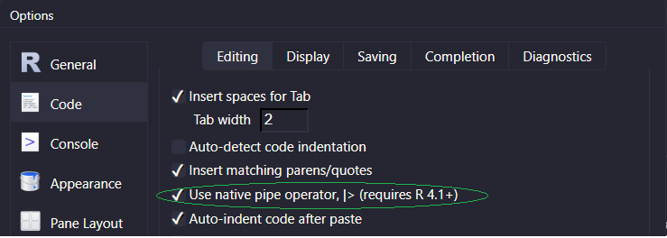
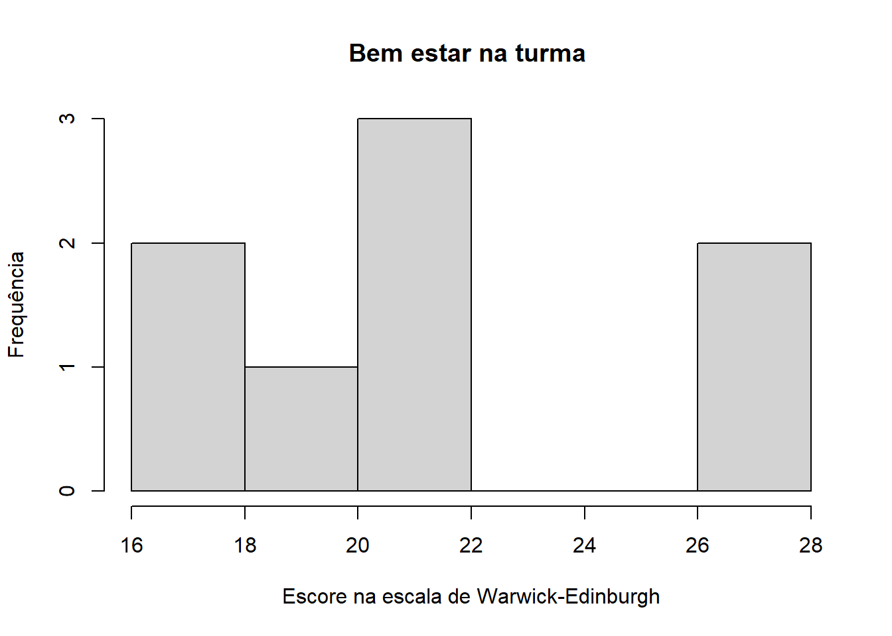

# Arquivos .csv separados por ","
readr::read_csv(file = "C://...")
# Arquivos .csv separados por ";"
readr::read_csv2(file = "C://...")
# Arquivos .xlsx (Excel)
readxl::read_xlsx(path = "C://...")
# Arquivos .sav (SPSS)
haven::read_sav(file = "C://...")
# Arquivos .rds
readr::read_rds(file = "C://...")Aula 4 - Importando e manipulando dados
Trabalhando com dados
Agora que sabemos a sintaxe básica do R, assim como os tipos de dados existentes, podemos começar a realizar tarefas mais complexas.
Os nossos objetos de estudo a partir de agora serão majoritariamente do tipo data.frame e tibble. A tibble é uma evolução da data.frame, com algumas melhorias. Para o nosso curso, saiba apenas sobre a existência das duas estruturas.
Existe um fluxo para trabalhar com bancos de dados, mostrado na figura abaixo.

Nessa aula, veremos como importar, organizar e manipular dados. Para essas tarefas, utilizaremos os pacotes contidos no tidyverse, um conjunto de pacotes pensados para ciência de dados, com uma filosofia em comum de organização.
Importando dados
O passo inicial para se trabalhar com dados é importá-los. Os dados podem vir de diversas fontes: bancos de dados SQL, arquvios *.csv, arquvivos *.xlsx, e até mesmo estruturas de dados oriundas de outros programas de análise estatística, como *.sav (SPSS).
Abaixo estão alguns pacotes e suas respectivas funções para importar dados:
Existem diversas funções para realizar essas mesmas importações. Recomendo seguir as funções acima para nos mantermos dentro do universo tidy.
Pipe
O operador pipe é uma forma de encadear várias operacões de forma concisa. Ele pega o que está à sua esquerda e passa para a função à sua direita. A partir do R 4.1.0, foi introduzida uma versão nativa do pipe (|>), que antes funcionava apenas pelo pacote magrittr, na forma (%>%). Para ativá-lo, basta ir nas opções globais do Rstudio, conforme figura abaixo.

Para utilizar o pipe, basta pressionar Ctrl/Cmd + Shift + M, ou apenas digitá-lo manualmente. Tente executar as linhas de código a seguir:
# Exemplo de uso do pipe
# Criando um vetor numérico
vetor <- c(1,2,3,4,5)
# Utilizando o pipe para calcular a média, a partir da função mean()
vetor |> mean()[1] 3# Sem o uso do pipe, a sintaxe seria da seguinte forma
mean(vetor)[1] 3Uma observação importante: o pipe sempre passará o objeto à sua esquerda como o primeiro argumento da função à direita. Para códigos mais simples, parece não haver muitos benefícios em seu uso, mas logo você entenderá o verdadeiro poder do operador.
Dados organizados (Tidy)
“Tidy datasets are all alike, but every messy dataset is messy in its own way”.
- Hadley Wickham
Devemos seguir três princípios para manter os nossos dados organizados:
- Cada variável deve representar coluna;
- Cada observação deve representar linha;
- Cada célula deve possuir um único valor
library(dplyr)
# Importar dados
df <- readxl::read_excel("../aula_3_estrutura/dados_turma_1.xlsx")
#df <- readxl::read_excel("aulas/aula_3_estrutura/dados_turma_1.xlsx")# Vamos dar uma olhada no banco de dados
glimpse(df)Rows: 17
Columns: 29
$ `Carimbo de data/hora` <dttm> …
$ `Idade (em anos, somente número)` <dbl> N…
$ `Altura (em metros, casa decimal separada por ponto)` <chr> N…
$ `Gênero cinematográfico preferido` <chr> N…
$ `Gênero musical preferido` <chr> N…
$ `Quantos vezes por semana, em média, você pratica atividade física?` <chr> N…
$ `Tenho me sentido otimista em relação ao futuro` <chr> N…
$ `Tenho me sentido útil` <chr> N…
$ `Tenho me sentido tranquilo` <chr> N…
$ `Tenho lidado bem com os problemas` <chr> N…
$ `Tenho pensado com clareza` <chr> N…
$ `Tenho me sentido próximo (a) às outras pessoas` <chr> N…
$ `Tenho sido capaz de tomar as minhas próprias decisões` <chr> N…
$ `É conversador, comunicativo` <chr> N…
$ `É depressivo, triste` <chr> N…
$ `É reservado` <chr> N…
$ `É relaxado, controla bem o stress` <chr> N…
$ `É cheio de energia` <chr> N…
$ `Fica tenso com frequência` <chr> N…
$ `Gera muito entusiasmo` <chr> N…
$ `Preocupa-se muito com tudo` <chr> N…
$ `Tende a ser quieto, calado` <chr> N…
$ `É emocionalmente estável, não se altera facilmente` <chr> N…
$ `É assertivo, não teme expressar o que sente` <chr> N…
$ `É temperamental, muda de humor facilmente` <chr> N…
$ `É, às vezes, tímido e inibido` <chr> N…
$ `Mantém-se calmo nas situações de tensão` <chr> N…
$ `É sociável, extrovertido` <chr> N…
$ `Fica nervoso facilmente` <chr> N…Os dados acima foram foram respondidos pelos alunos da turma 1. Cada linha é a resposta de um aluno. Note que os três princípios foram respeitados. Ainda assim, podemos melhorar o banco de dados. Para isso, exploraremos o pacote dplyr, parte central do tidyverse.
Manipulando dados com o pacote dplyr
Dentro do tidyverse, utilizaremos frequentemente o operador pipe (|>). A sintaxe para manipulação dos dados segue um esqueleto, mostrado abaixo:
# Estrutura básica da manipulação de dados com dplyr
banco_de_dados |>
verbo(ação) |>
outro_verbo(outra_ação)É importante entender a estrutura acima. O primeiro argumento sempre será o banco de dados com o qual estamos trabalhando. Em seguida, utilizamos o operador |>, que irá repassar o banco de dados para a função à direita no código (no caso do exemplo, verbo()). Utilizei a palavra verbo porque as funções do dplyr foram escritas com nomes de formas verbais, para facilitar o entendimento. Veremos cada função mais abaixo.
Com o uso do |>, podemos encadear várias ações consecutivas. Essa é a grande beleza desse instrumento. As três linhas do código acima poderiam ser escritas na mesma linha. Essa separação é para facilitar a leitura do código.
Os principais verbos do dplyr
Verbos que atuam nas linhas
filter(): permite filtrar o banco de acordo com a condição desejada1
arrange(): ordena as observações do banco a partir de uma variável escolhida
distinct(): mostra apenas as linhas únicas (não-repetidas) no banco de dados. Também pode ser utilizado para mostrar valores únicos de determinada variável.
Verbos que atuam nas colunas
mutate(): adiciona novas colunas, baseando-se nas colunas existentes. Também pode alterar o valor de colunas já existentes
select(): reduz a quantidade de variáveis no banco de dados, selecionando somente as colunas de interesse2
rename(): renomeia as colunas do banco de dados
relocate(): alterna a ordem das colunas
Exemplo
O banco de dados acima possui nomes de colunas separados por espaço. Quando isso ocorrer, o R irá colocar o nome entre ` `. Esse tipo de nomeclatura não é recomendada.
# Nome das colunas do banco de dados
df |> names() [1] "Carimbo de data/hora"
[2] "Idade (em anos, somente número)"
[3] "Altura (em metros, casa decimal separada por ponto)"
[4] "Gênero cinematográfico preferido"
[5] "Gênero musical preferido"
[6] "Quantos vezes por semana, em média, você pratica atividade física?"
[7] "Tenho me sentido otimista em relação ao futuro"
[8] "Tenho me sentido útil"
[9] "Tenho me sentido tranquilo"
[10] "Tenho lidado bem com os problemas"
[11] "Tenho pensado com clareza"
[12] "Tenho me sentido próximo (a) às outras pessoas"
[13] "Tenho sido capaz de tomar as minhas próprias decisões"
[14] "É conversador, comunicativo"
[15] "É depressivo, triste"
[16] "É reservado"
[17] "É relaxado, controla bem o stress"
[18] "É cheio de energia"
[19] "Fica tenso com frequência"
[20] "Gera muito entusiasmo"
[21] "Preocupa-se muito com tudo"
[22] "Tende a ser quieto, calado"
[23] "É emocionalmente estável, não se altera facilmente"
[24] "É assertivo, não teme expressar o que sente"
[25] "É temperamental, muda de humor facilmente"
[26] "É, às vezes, tímido e inibido"
[27] "Mantém-se calmo nas situações de tensão"
[28] "É sociável, extrovertido"
[29] "Fica nervoso facilmente" Para renomear as colunas, vamos utilizar o verbo/função rename()
# Renomeando as variáveis do banco
df |>
rename(
data_preenchimento = `Carimbo de data/hora`,
idade = `Idade (em anos, somente número)`,
altura = `Altura (em metros, casa decimal separada por ponto)`,
cinema = `Gênero cinematográfico preferido`,
musica = `Gênero musical preferido`,
atividade_fisica = `Quantos vezes por semana, em média, você pratica atividade física?`,
otimismo = `Tenho me sentido otimista em relação ao futuro`,
utilidade = `Tenho me sentido útil`,
tranquilidade = `Tenho me sentido tranquilo`,
lidar_problemas = `Tenho lidado bem com os problemas`,
clareza_mental = `Tenho pensado com clareza`,
proximidade = `Tenho me sentido próximo (a) às outras pessoas`,
decisoes = `Tenho sido capaz de tomar as minhas próprias decisões`,
comunicativo = `É conversador, comunicativo`,
depressivo = `É depressivo, triste`,
reservado = `É reservado`,
controle_estresse = `É relaxado, controla bem o stress`,
energia = `É cheio de energia`,
tensao = `Fica tenso com frequência`,
entusiasmo = `Gera muito entusiasmo`,
preocupacao = `Preocupa-se muito com tudo`,
quietude = `Tende a ser quieto, calado`,
estabilidade_emocional = `É emocionalmente estável, não se altera facilmente`,
assertividade = `É assertivo, não teme expressar o que sente`,
temperamento = `É temperamental, muda de humor facilmente`,
timidez = `É, às vezes, tímido e inibido`,
calma = `Mantém-se calmo nas situações de tensão`,
sociabilidade = `É sociável, extrovertido`,
nervosismo = `Fica nervoso facilmente`
)O novo nome fica à esquerda, seguido do sinal de igualdade e o nome antigo. Vamos dar uma olhada no banco de dados após a modificação.
# Visualizar estrutura do banco
df |> glimpse()Rows: 17
Columns: 29
$ `Carimbo de data/hora` <dttm> …
$ `Idade (em anos, somente número)` <dbl> N…
$ `Altura (em metros, casa decimal separada por ponto)` <chr> N…
$ `Gênero cinematográfico preferido` <chr> N…
$ `Gênero musical preferido` <chr> N…
$ `Quantos vezes por semana, em média, você pratica atividade física?` <chr> N…
$ `Tenho me sentido otimista em relação ao futuro` <chr> N…
$ `Tenho me sentido útil` <chr> N…
$ `Tenho me sentido tranquilo` <chr> N…
$ `Tenho lidado bem com os problemas` <chr> N…
$ `Tenho pensado com clareza` <chr> N…
$ `Tenho me sentido próximo (a) às outras pessoas` <chr> N…
$ `Tenho sido capaz de tomar as minhas próprias decisões` <chr> N…
$ `É conversador, comunicativo` <chr> N…
$ `É depressivo, triste` <chr> N…
$ `É reservado` <chr> N…
$ `É relaxado, controla bem o stress` <chr> N…
$ `É cheio de energia` <chr> N…
$ `Fica tenso com frequência` <chr> N…
$ `Gera muito entusiasmo` <chr> N…
$ `Preocupa-se muito com tudo` <chr> N…
$ `Tende a ser quieto, calado` <chr> N…
$ `É emocionalmente estável, não se altera facilmente` <chr> N…
$ `É assertivo, não teme expressar o que sente` <chr> N…
$ `É temperamental, muda de humor facilmente` <chr> N…
$ `É, às vezes, tímido e inibido` <chr> N…
$ `Mantém-se calmo nas situações de tensão` <chr> N…
$ `É sociável, extrovertido` <chr> N…
$ `Fica nervoso facilmente` <chr> N…Os nomes não foram alterados. Isso ocorreu porque as funções do dplyr apenas retornam um novo banco modificado, porém não alteram o banco original. Para armazenar o novo banco, devemos atribuí-lo a um novo objeto.
# Modificando os nomes das colunas e salvando o banco no objeto df_renomeada
df_renomeada <- df |>
rename(
data_preenchimento = `Carimbo de data/hora`,
idade = `Idade (em anos, somente número)`,
altura = `Altura (em metros, casa decimal separada por ponto)`,
cinema = `Gênero cinematográfico preferido`,
musica = `Gênero musical preferido`,
atividade_fisica = `Quantos vezes por semana, em média, você pratica atividade física?`,
otimismo = `Tenho me sentido otimista em relação ao futuro`,
utilidade = `Tenho me sentido útil`,
tranquilidade = `Tenho me sentido tranquilo`,
lidar_problemas = `Tenho lidado bem com os problemas`,
clareza_mental = `Tenho pensado com clareza`,
proximidade = `Tenho me sentido próximo (a) às outras pessoas`,
decisoes = `Tenho sido capaz de tomar as minhas próprias decisões`,
comunicativo = `É conversador, comunicativo`,
depressivo = `É depressivo, triste`,
reservado = `É reservado`,
controle_estresse = `É relaxado, controla bem o stress`,
energia = `É cheio de energia`,
tensao = `Fica tenso com frequência`,
entusiasmo = `Gera muito entusiasmo`,
preocupacao = `Preocupa-se muito com tudo`,
quietude = `Tende a ser quieto, calado`,
estabilidade_emocional = `É emocionalmente estável, não se altera facilmente`,
assertividade = `É assertivo, não teme expressar o que sente`,
temperamento = `É temperamental, muda de humor facilmente`,
timidez = `É, às vezes, tímido e inibido`,
calma = `Mantém-se calmo nas situações de tensão`,
sociabilidade = `É sociável, extrovertido`,
nervosismo = `Fica nervoso facilmente`
)Esse banco de dados não possui uma variável de identificação. Esse tipo de variável garante a singularidade de cada observação. Poderia ser o nome do indivíduo, porém geralmente são números de identificação, para garantir o anonimato. Você deve ter visto também que o primeiro valor de cada variável acima é do tipo NA, ou seja, um dado faltante. Isso geralmente ocorre por não-preenchimento de uma variável durante a coleta de dados ou pelo seu preenchimento incorreto. Nesse caso, provavelmente ocorreu porque a primeira observação do banco foi deletada antes da importação. Para criar a variável de identificação, iremos primeiramente excluir a linha com dados faltantes3.
# Excluindo os dados faltantes do banco
df_renomeada <- df_renomeada |>
tidyr::drop_na()Agora podemos criar uma nova coluna de identificação utilizando o verbo mutate(). Utilizarei o argumento .before da função para posicionar a variável no início do banco.
# Criando variável de identificação e alterando sua posição para o início
df_renomeada <- df_renomeada |>
mutate(id = row_number(), .before = data_preenchimento) # A tibble: 15 × 30
id data_preenchimento idade altura cinema musica atividade_fisica
<int> <dttm> <dbl> <chr> <chr> <chr> <chr>
1 1 2023-08-11 13:45:33 22 1.71 Ficção cientí… Cláss… Mais do que cin…
2 2 2023-08-11 13:45:49 20 1.79 Suspense Pop Não pratico ati…
3 3 2023-08-11 13:50:47 25 1.76 Suspense Rock Entre três e ci…
4 4 2023-08-11 14:16:36 25 1.78 Drama Rock Entre três e ci…
5 5 2023-08-12 01:05:19 23 1.77 Ficção cientí… Rock Menos do que tr…
6 6 2023-08-12 11:36:58 20 1.8 Terror Rock Mais do que cin…
7 7 2023-08-12 12:05:59 28 1.74 Ficção cientí… Indie Menos do que tr…
8 8 2023-08-12 19:02:14 20 1.82 Ficção cientí… Pop Entre três e ci…
9 9 2023-08-15 09:36:41 23 1.58 Ficção cientí… Rock Entre três e ci…
10 10 2023-08-15 14:52:52 20 1.75 Drama Rock Mais do que cin…
11 11 2023-08-15 20:20:23 23 1.92 Drama Pop Entre três e ci…
12 12 2023-08-16 13:59:30 19 1.65 Ficção cientí… Rock Menos do que tr…
13 13 2023-08-17 14:48:44 22 1.59 Drama MPB Menos do que tr…
14 14 2023-08-17 20:10:52 23 1.68 Ficção cientí… MPB Não pratico ati…
15 15 2023-08-18 12:45:31 20 1.64 Ação Rock Menos do que tr…
# ℹ 23 more variables: otimismo <chr>, utilidade <chr>, tranquilidade <chr>,
# lidar_problemas <chr>, clareza_mental <chr>, proximidade <chr>,
# decisoes <chr>, comunicativo <chr>, depressivo <chr>, reservado <chr>,
# controle_estresse <chr>, energia <chr>, tensao <chr>, entusiasmo <chr>,
# preocupacao <chr>, quietude <chr>, estabilidade_emocional <chr>,
# assertividade <chr>, temperamento <chr>, timidez <chr>, calma <chr>,
# sociabilidade <chr>, nervosismo <chr>Vamos supor que gostaríamos de avaliar o bem-estar na turma. Para isso, vamos selecionar algumas variáveis de interesse 4.
# Seleciona apenas variáveis de características individuais, gostos e bem-estar
df_filtrada <- df_renomeada |>
select(idade:decisoes, -cinema) Rows: 15
Columns: 11
$ idade <dbl> 22, 20, 25, 25, 23, 20, 28, 20, 23, 20, 23, 19, 22, 2…
$ altura <chr> "1.71", "1.79", "1.76", "1.78", "1.77", "1.8", "1.74"…
$ musica <chr> "Clássico", "Pop", "Rock", "Rock", "Rock", "Rock", "I…
$ atividade_fisica <chr> "Mais do que cinco vezes na semana", "Não pratico ati…
$ otimismo <chr> "Sempre", "Frequentemente", "Algumas vezes", "Algumas…
$ utilidade <chr> "Sempre", "Algumas vezes", "Algumas vezes", "Algumas …
$ tranquilidade <chr> "Frequentemente", "Algumas vezes", "Raramente", "Rara…
$ lidar_problemas <chr> "Algumas vezes", "Algumas vezes", "Algumas vezes", "R…
$ clareza_mental <chr> "Frequentemente", "Frequentemente", "Algumas vezes", …
$ proximidade <chr> "Frequentemente", "Frequentemente", "Algumas vezes", …
$ decisoes <chr> "Frequentemente", "Frequentemente", "Sempre", "Alguma…Vamos trabalhar apenas com os rockeiros da turma. Assim, podemos filtrar o banco com a função select()
# Após selecionar, filtra banco para rockeiros
df_rockeiros <- df_filtrada |>
filter(musica == "Rock")Rows: 8
Columns: 11
$ idade <dbl> 25, 25, 23, 20, 23, 20, 19, 20
$ altura <chr> "1.76", "1.78", "1.77", "1.8", "1.58", "1.75", "1.65"…
$ musica <chr> "Rock", "Rock", "Rock", "Rock", "Rock", "Rock", "Rock…
$ atividade_fisica <chr> "Entre três e cinco vezes na semana", "Entre três e c…
$ otimismo <chr> "Algumas vezes", "Algumas vezes", "Algumas vezes", "F…
$ utilidade <chr> "Algumas vezes", "Algumas vezes", "Raramente", "Frequ…
$ tranquilidade <chr> "Raramente", "Raramente", "Algumas vezes", "Algumas v…
$ lidar_problemas <chr> "Algumas vezes", "Raramente", "Nunca", "Frequentement…
$ clareza_mental <chr> "Algumas vezes", "Algumas vezes", "Raramente", "Frequ…
$ proximidade <chr> "Algumas vezes", "Raramente", "Raramente", "Algumas v…
$ decisoes <chr> "Sempre", "Algumas vezes", "Frequentemente", "Sempre"…Ao checar os tipos das variáveis de cada coluna acima, vemos que há algumas incongruências. Altura, por exemplo, deveria ser uma variável do tipo double. musica, atividade_fisica e as variáveis de bem-estar deveriam ser do tipo fator, visto que são variáveis categóricas.
Vamos então converter as variáveis para os tipos desejados.
# Cria vetor com as categorias de atividade fisica
levels_ativ_fisica <- c("Não pratico atividade física", "Menos do que três vezes na semana", "Entre três e cinco vezes na semana", "Mais do que cinco vezes na semana")
# Cria vetor com as categorias para as respostas do questionário
levels_likert <- c("Nunca", "Raramente", "Algumas vezes", "Frequentemente", "Sempre")
# Converte variáveis para os tipos desejados e cria uma variável id para identificar cada indivíduo
df_rockeiros_corrigida <- df_rockeiros |>
mutate(
altura = as.double(altura),
musica = factor(musica),
atividade_fisica = factor(atividade_fisica, levels = levels_ativ_fisica , ordered = T),
across(otimismo:decisoes, ~ factor(.x, levels = levels_likert, ordered = T))
)Rows: 8
Columns: 11
$ idade <dbl> 25, 25, 23, 20, 23, 20, 19, 20
$ altura <dbl> 1.76, 1.78, 1.77, 1.80, 1.58, 1.75, 1.65, 1.64
$ musica <fct> Rock, Rock, Rock, Rock, Rock, Rock, Rock, Rock
$ atividade_fisica <ord> Entre três e cinco vezes na semana, Entre três e cinc…
$ otimismo <ord> Algumas vezes, Algumas vezes, Algumas vezes, Frequent…
$ utilidade <ord> Algumas vezes, Algumas vezes, Raramente, Frequentemen…
$ tranquilidade <ord> Raramente, Raramente, Algumas vezes, Algumas vezes, A…
$ lidar_problemas <ord> Algumas vezes, Raramente, Nunca, Frequentemente, Rara…
$ clareza_mental <ord> Algumas vezes, Algumas vezes, Raramente, Frequentemen…
$ proximidade <ord> Algumas vezes, Raramente, Raramente, Algumas vezes, A…
$ decisoes <ord> Sempre, Algumas vezes, Frequentemente, Sempre, Rarame…Agora, vamos criar uma nova variável bem_estar, formada pela soma das 5 perguntas do questionário de Warwick-Edinburgh. Em nosso banco, o questionário está representado pelas variáveis otimismo, utilidade, tranquilidade, lidar_problemas, clareza_mental, proximidade e decisoes.
| Item | Resposta |
|---|---|
| Tenho me sentido otimista em relação ao futuro | 1-2-3-4-5 |
| Tenho me sentido útil | 1-2-3-4-5 |
| Tenho me sentido tranquilo | 1-2-3-4-5 |
| Tenho lidado bem com os problemas | 1-2-3-4-5 |
| Tenho pensado com clareza | 1-2-3-4-5 |
| Tenho me sentido próximo (a) às outras pessoas | 1-2-3-4-5 |
| Tenho sido capaz de tomar as minhas próprias decisões | 1-2-3-4-5 |
1 = Nunca; 2 = Raramente; 3 = Algumas vezes; 4 = Frequentemente; 5 = Sempre.
Para somar as pontuações, precisamos primeiramente converter o valor das respostas do questionário para um valor numérico. No R, fatores podem ser facilmente convertidos em valores numéricos pela função as.numeric(), o que é útil em diversas operações.
Conversão de fator para valores numéricos
Internamente os fatores são representados por números inteiros no R. Ainda assim, é importante ter cuidado com essa conversão, pois nem sempre você terá os valores numéricos que deseja.
Para saber mais, veja a seção “Warning” no link: https://stat.ethz.ch/R-manual/R-devel/library/base/html/factor.html
# Convertendo as variáveis de factor para um valor numérico
df_quest_numerico <- df_rockeiros_corrigida |>
mutate(across(otimismo:decisoes, as.numeric))Rows: 8
Columns: 11
$ idade <dbl> 25, 25, 23, 20, 23, 20, 19, 20
$ altura <dbl> 1.76, 1.78, 1.77, 1.80, 1.58, 1.75, 1.65, 1.64
$ musica <fct> Rock, Rock, Rock, Rock, Rock, Rock, Rock, Rock
$ atividade_fisica <ord> Entre três e cinco vezes na semana, Entre três e cinc…
$ otimismo <dbl> 3, 3, 3, 4, 3, 4, 3, 3
$ utilidade <dbl> 3, 3, 2, 4, 2, 3, 2, 3
$ tranquilidade <dbl> 2, 2, 3, 3, 3, 4, 2, 2
$ lidar_problemas <dbl> 3, 2, 1, 4, 2, 3, 4, 3
$ clareza_mental <dbl> 3, 3, 2, 4, 4, 5, 4, 4
$ proximidade <dbl> 3, 2, 2, 3, 3, 4, 3, 3
$ decisoes <dbl> 5, 3, 4, 5, 2, 5, 4, 4Agora que as variáveis de bem-estar estão na forma numérica, podemos somar a pontuação no questionário para cada indivíduo. Perceba que essa operação é através das colunas
# Também com o verbo mutate, cria nova variável bem_estar
df_bem_estar <- df_quest_numerico |>
rowwise() |>
mutate(bem_estar = sum(c(otimismo, utilidade, tranquilidade, lidar_problemas, clareza_mental, proximidade, decisoes)))Rows: 8
Columns: 12
Rowwise:
$ idade <dbl> 25, 25, 23, 20, 23, 20, 19, 20
$ altura <dbl> 1.76, 1.78, 1.77, 1.80, 1.58, 1.75, 1.65, 1.64
$ musica <fct> Rock, Rock, Rock, Rock, Rock, Rock, Rock, Rock
$ atividade_fisica <ord> Entre três e cinco vezes na semana, Entre três e cinc…
$ otimismo <dbl> 3, 3, 3, 4, 3, 4, 3, 3
$ utilidade <dbl> 3, 3, 2, 4, 2, 3, 2, 3
$ tranquilidade <dbl> 2, 2, 3, 3, 3, 4, 2, 2
$ lidar_problemas <dbl> 3, 2, 1, 4, 2, 3, 4, 3
$ clareza_mental <dbl> 3, 3, 2, 4, 4, 5, 4, 4
$ proximidade <dbl> 3, 2, 2, 3, 3, 4, 3, 3
$ decisoes <dbl> 5, 3, 4, 5, 2, 5, 4, 4
$ bem_estar <dbl> 22, 18, 17, 27, 19, 28, 22, 22Todas as operações acima poderiam ser realizadas de forma encadeada. A decisão por separá-las foi para focarmos em somente um verbo por vez. Veja como ficaria:
# Juntando todas as operações acima
df_bem_estar <- df_renomeada |>
select(idade:decisoes, -cinema) |>
filter(musica == "Rock") |>
mutate(
id = row_number(), .before = idade,
altura = as.double(altura),
musica = factor(musica),
atividade_fisica = factor(atividade_fisica, levels = levels_ativ_fisica , ordered = T),
across(otimismo:decisoes, ~ factor(.x, levels = levels_likert, ordered = T)),
across(otimismo:decisoes, as.numeric)
) |>
rowwise() |>
mutate(bem_estar = sum(c(otimismo, utilidade, tranquilidade, lidar_problemas, clareza_mental, proximidade, decisoes))) Por último, vamos visualizar a frequência das pontuações por meio de um histograma.
# Visualizando a frequência das pontuações
df_bem_estar |>
select(bem_estar) |>
pull() |>
hist(xlab = "Escore na escala de Warwick-Edinburgh", ylab = "Frequência", main = "Bem estar na turma ")
Salvando seu banco de dados alterados
Após manipular os dados de um banco, é importante salvá-los para não precisar rodar o script sempre que quiser ter acesso ao seu banco alterado.
Há diversos formatos nos quais podemos salvar uma tibble. Os mais comuns são *.csv e *.rds. Dentro do tidyverse, podemos fazer isso com o pacote readr.
# Cria novo arquivo .csv
readr::write_csv(df_bem_estar, file = "nome_do_arquivo.csv")
# Cria novo arquivo .rds
readr::write_rds(df_bem_estar, file = "nome_do_arquivo.csv")Footnotes
É possível utilizar operadores lógicos (
&e|) dentro do verbo filter para filtrar o banco a partir duas ou mais condições.↩︎Existem várias funções auxiliares que você pode usar dentro de
select():
starts_with("abc"): seleciona colunas que começam com “abc”.
ends_with("xyz"): seleciona colunas que terminam com “xyz”.
contains("ijk"): seleciona colunas que contêm “ijk”.
num_range("x", 1:3): seleciona colunas com x1, x2 e x3.↩︎Existem diversas formas de lidar com dados faltantes. Nesse caso, é somente uma linha do nosso banco e por isso utilizamos o
drop_na(). Entretanto, em análises mais complexas, essa não é a melhor forma de lidar com esse tipo de dados. Para saber um pouco mais: https://psicometriaonline.com.br/o-que-sao-dados-faltantes/↩︎O output de todas as
tibblesserá conforme a funçãoglimpse(). Vocês apenas não verão a função sendo executada por escolha do autor.↩︎